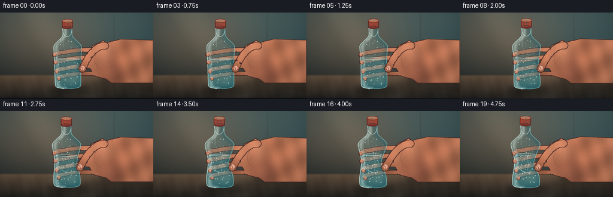
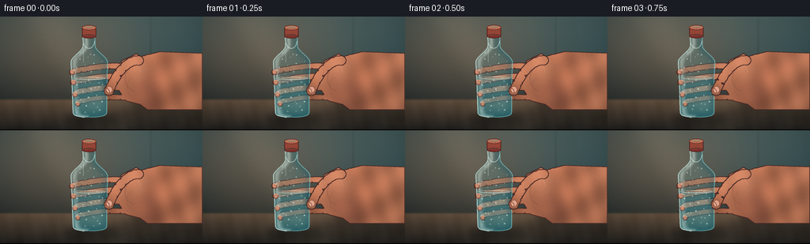
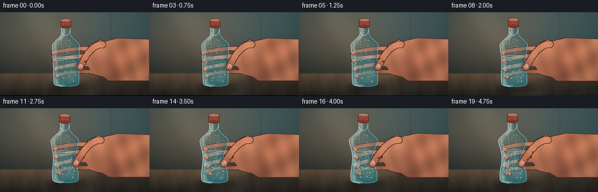
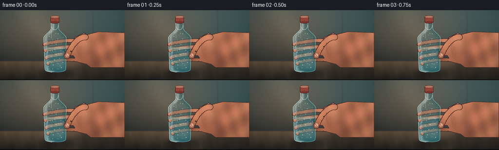

CODING AGENTS AS PIXEL WORLD MODELS
traex/DeepSeek-V4.1-Flash · mechanics_0017
点击播放 · 原生 RGB 像素
逐轮保存的候选
回放视频、检查图与代码变化。
每份候选均可单独播放。实际图片检查记录在下方工具轨迹中。
候选 01播放与检查图
点击播放 · 原生 RGB 像素


展开代码变化
--- 上一保存版本
+++ 本次保存版本
@@ -0,0 +1,603 @@
+#!/usr/bin/env python3
+"""Procedural RGB render for a hand progressively crushing a plastic bottle."""
+
+from pathlib import Path
+
+import numpy as np
+from PIL import Image, ImageChops, ImageDraw, ImageFilter
+
+import artifact_io
+
+
+OUT_W, OUT_H = 256, 144
+N_FRAMES = 20
+FPS = 4.0
+SS = 4
+W, H = OUT_W * SS, OUT_H * SS
+CASE_DIR = Path(__file__).resolve().parent
+
+YY, XX = np.mgrid[0:H, 0:W]
+YYF = YY.astype(np.float32)
+XXF = XX.astype(np.float32)
+RNG = np.random.default_rng(1701)
+
+
+def smoothstep(edge0, edge1, value):
+ t = np.clip((value - edge0) / (edge1 - edge0), 0.0, 1.0)
+ return t * t * (3.0 - 2.0 * t)
+
+
+def mix(a, b, amount):
+ return tuple(int(round(a[i] * (1.0 - amount) + b[i] * amount)) for i in range(3))
+
+
+def cubic(p0, p1, p2, p3, count=48):
+ t = np.linspace(0.0, 1.0, count, dtype=np.float32)[:, None]
+ p0, p1, p2, p3 = (np.asarray(p, dtype=np.float32)[None, :] for p in (p0, p1, p2, p3))
+ points = (
+ (1.0 - t) ** 3 * p0
+ + 3.0 * (1.0 - t) ** 2 * t * p1
+ + 3.0 * (1.0 - t) * t**2 * p2
+ + t**3 * p3
+ )
+ return [tuple(point) for point in points]
+
+
+def pressure_at(index):
+ u = index / (N_FRAMES - 1)
+ eased = smoothstep(0.02, 1.0, u)
+ return float(0.035 + 0.965 * eased)
+
+
+def make_skin_texture():
+ """A softly mottled skin plate, clipped by hand silhouettes later."""
+ warm = np.array([194.0, 126.0, 96.0], dtype=np.float32)
+ nx = (XXF - W * 0.56) / W
+ ny = (YYF - H * 0.45) / H
+ light = 0.88 - 0.22 * ny - 0.10 * nx
+ light += 0.075 * np.sin(XXF * 0.020 + YYF * 0.031)
+ light += 0.045 * np.sin(XXF * 0.055 - YYF * 0.017)
+ light += RNG.normal(0.0, 0.022, (H, W))
+ plate = warm[None, None, :] * np.clip(light[..., None], 0.62, 1.18)
+ # A little more red near the palm and wrist.
+ palm_glow = np.exp(-(((XXF - 690) / 270) ** 2 + ((YYF - 335) / 230) ** 2))
+ plate += palm_glow[..., None] * np.array([12.0, 1.0, -2.0])
+ return Image.fromarray(np.clip(plate, 0, 255).astype(np.uint8), "RGB")
+
+
+SKIN = make_skin_texture()
+SKIN_SHADOW = (91, 55, 48)
+SKIN_DEEP = (66, 39, 37)
+SKIN_LIGHT = (230, 165, 132)
+SKIN_HOT = (246, 191, 158)
+NAIL = (218, 164, 145)
+PLASTIC_EDGE = (205, 249, 249)
+
+
+def make_background():
+ u = np.clip(YYF / (H * 0.79), 0.0, 1.0)
+ top = np.array([70.0, 94.0, 96.0])
+ bottom = np.array([27.0, 42.0, 46.0])
+ bg = top[None, None, :] * (1.0 - u[..., None]) + bottom[None, None, :] * u[..., None]
+
+ glow = np.exp(-0.5 * (((XXF - 285.0) / 330.0) ** 2 + ((YYF - 175.0) / 235.0) ** 2))
+ bg += glow[..., None] * np.array([42.0, 18.0, 5.0])
+
+ right_glow = np.exp(-0.5 * (((XXF - 930.0) / 260.0) ** 2 + ((YYF - 290.0) / 310.0) ** 2))
+ bg += right_glow[..., None] * np.array([4.0, 13.0, 16.0])
+
+ table_u = np.clip((YYF - 421.0) / (H - 421.0), 0.0, 1.0)
+ table_top = np.array([101.0, 83.0, 66.0])
+ table_bottom = np.array([39.0, 38.0, 36.0])
+ table = table_top[None, None, :] * (1.0 - table_u[..., None]) + table_bottom[None, None, :] * table_u[..., None]
+ grain = (
+ 0.55 * np.sin(XXF * 0.043 + YYF * 0.012)
+ + 0.28 * np.sin(XXF * 0.103 - YYF * 0.024 + 1.3)
+ + 0.16 * np.sin(XXF * 0.011 + YYF * 0.061)
+ )
+ table += (grain * 4.5)[..., None]
+
+ table_mask = 1.0 / (1.0 + np.exp(-(YYF - 424.0) / 2.4))
+ image = bg * (1.0 - table_mask[..., None]) + table * table_mask[..., None]
+
+ # A broad, soft wall seam keeps the studio backdrop from feeling synthetic.
+ seam = np.exp(-0.5 * ((XXF - 762.0) / 4.0) ** 2) * np.exp(-0.5 * ((YYF - 220.0) / 210.0) ** 2)
+ image *= 1.0 - 0.09 * seam[..., None]
+
+ edge_distance = np.sqrt(((XXF - W * 0.5) / (W * 0.62)) ** 2 + ((YYF - H * 0.49) / (H * 0.64)) ** 2)
+ vignette = np.clip(1.0 - 0.22 * edge_distance**2, 0.67, 1.0)
+ image *= vignette[..., None]
+ image += RNG.normal(0.0, 1.8, (H, W, 1))
+ return Image.fromarray(np.clip(image, 0, 255).astype(np.uint8), "RGB")
+
+
+BACKGROUND = make_background()
+
+
+def add_lighting(base, index):
+ t = index / (N_FRAMES - 1)
+ overlay = Image.new("RGBA", (W, H), (0, 0, 0, 0))
+ draw = ImageDraw.Draw(overlay)
+
+ shift = -20.0 * t
+ draw.polygon(
+ [
+ (70 + shift, -40),
+ (340 + shift, -40),
+ (720 + shift, H),
+ (470 + shift, H),
+ ],
+ fill=(255, 226, 190, 14),
+ )
+ draw.polygon(
+ [
+ (690 - shift * 0.35, -30),
+ (790 - shift * 0.35, -30),
+ (930 - shift * 0.35, H),
+ (820 - shift * 0.35, H),
+ ],
+ fill=(35, 70, 76, 13),
+ )
+ overlay = overlay.filter(ImageFilter.GaussianBlur(48))
+ return Image.alpha_composite(base.convert("RGBA"), overlay).convert("RGB")
+
+
+def bottle_profile(pressure):
+ ys = np.arange(98, 515, dtype=np.float32)
+ halfwidth = np.empty_like(ys)
+ center = np.empty_like(ys)
+
+ neck = ys < 150.0
+ shoulder = (ys >= 150.0) & (ys < 235.0)
+ body = (ys >= 235.0) & (ys < 480.0)
+ foot = ys >= 480.0
+
+ halfwidth[neck] = 30.0
+ shoulder_u = smoothstep(150.0, 235.0, ys[shoulder])
+ halfwidth[shoulder] = 30.0 + 62.0 * shoulder_u
+ halfwidth[body] = 92.0 - 7.0 * (ys[body] - 235.0) / 245.0
+ foot_u = np.clip((ys[foot] - 480.0) / 34.0, 0.0, 1.0)
+ halfwidth[foot] = 85.0 * np.sqrt(np.clip(1.0 - foot_u**4, 0.0, 1.0))
+
+ grip = np.exp(-((ys - 340.0) / 76.0) ** 2)
+ shoulder_bulge = np.exp(-((ys - 232.0) / 40.0) ** 2)
+ lower_bulge = np.exp(-((ys - 458.0) / 46.0) ** 2)
+ center[:] = 452.0 + 0.012 * (ys - 290.0) - 3.2 * pressure * grip
+ halfwidth += pressure * (5.2 * shoulder_bulge + 3.5 * lower_bulge)
+
+ left = center - halfwidth + 19.0 * pressure * grip
+ right = center + halfwidth - 29.0 * pressure * grip
+
+ # The palm leaves a sharper dent on the near/right side.
+ right -= 7.0 * pressure * np.exp(-((ys - 357.0) / 28.0) ** 2)
+ left = np.minimum(left, right - 38.0)
+ return ys, left, right, center, halfwidth
+
+
+def bottle_mask_from_edges(ys, left, right):
+ mask = Image.new("L", (W, H), 0)
+ draw = ImageDraw.Draw(mask)
+ polygon = list(zip(left.tolist(), ys.tolist())) + list(zip(right[::-1].tolist(), ys[::-1].tolist()))
+ draw.polygon(polygon, fill=255)
+ return mask
+
+
+def add_soft_shadows(base, pressure, thumb_tip):
+ shadow = Image.new("RGBA", (W, H), (0, 0, 0, 0))
+ draw = ImageDraw.Draw(shadow)
+
+ # Bottle contact shadow, lengthened toward camera-right.
+ draw.ellipse((326, 493, 646, 553), fill=(18, 21, 20, 112))
+ draw.ellipse((362, 506, 585, 535), fill=(13, 17, 17, 135))
+ draw.ellipse((575, 462, 941, 537), fill=(24, 24, 22, 66))
+
+ # Forearm shadow across the tabletop.
+ draw.polygon(
+ [(692, 375), (848, 342), (1024, 388), (1024, 528), (714, 495), (657, 431)],
+ fill=(21, 22, 20, 86),
+ )
+ shadow = shadow.filter(ImageFilter.GaussianBlur(18))
+ return Image.alpha_composite(base.convert("RGBA"), shadow).convert("RGB")
+
+
+def draw_hand_mask(pressure, thumb_tip):
+ mask = Image.new("L", (W, H), 0)
+ draw = ImageDraw.Draw(mask)
+ palm_shift = -6.0 * pressure
+
+ arm = [
+ (703 + palm_shift, 207),
+ (806, 180),
+ (1024, 188),
+ (1024, 476),
+ (742, 476),
+ (681 + palm_shift, 430),
+ ]
+ draw.polygon(arm, fill=255)
+
+ palm = [
+ (615 + palm_shift, 226),
+ (689 + palm_shift, 190),
+ (759 + palm_shift, 228),
+ (783 + palm_shift, 312),
+ (766 + palm_shift, 405),
+ (704 + palm_shift, 449),
+ (637 + palm_shift, 432),
+ (590 + palm_shift, 364),
+ (595 + palm_shift, 277),
+ ]
+ draw.polygon(palm, fill=255)
+ draw.ellipse((610 + palm_shift, 205, 755 + palm_shift, 438), fill=255)
+ draw.ellipse((708 + palm_shift, 194, 785 + palm_shift, 448), fill=255)
+
+ # Four fingers curl around the far side of the bottle. The bottle is
+ # translucent, so their middle sections remain subtly visible.
+ finger_specs = [
+ (266.0, 365.0, 32.0, 286.0),
+ (319.0, 371.0, 34.0, 337.0),
+ (374.0, 379.0, 33.0, 398.0),
+ (424.0, 393.0, 29.0, 447.0),
+ ]
+ paths = []
+ for base_y, tip_x, width, tip_y in finger_specs:
+ start = (681 + palm_shift, base_y)
+ tip = (tip_x + 12.0 * pressure, tip_y + 4.0 * pressure)
+ c1 = (636 + palm_shift, base_y - 18.0)
+ c2 = (500.0, base_y - 13.0 - 2.0 * pressure)
+ mid = (436.0, base_y + 4.0)
+ c3 = (410.0, base_y + 6.0)
+ c4 = (380.0, base_y + 12.0)
+ path = cubic(start, c1, c2, mid, 36) + cubic(mid, c3, c4, tip, 28)[1:]
+ paths.append((path, width, tip))
+ draw.line(path, fill=255, width=int(width), joint="curve")
+ for point in path[::8]:
+ radius = width * 0.50
+ draw.ellipse(
+ (point[0] - radius, point[1] - radius, point[0] + radius, point[1] + radius),
+ fill=255,
+ )
+ radius = width * 0.51
+ draw.ellipse((tip[0] - radius, tip[1] - radius, tip[0] + radius, tip[1] + radius), fill=255)
+
+ # Thumb, drawn separately in front of the bottle.
+ thumb_base = (703 + palm_shift, 226)
+ thumb_path = cubic(
+ thumb_base,
+ (660 + palm_shift, 224),
+ (602 + palm_shift, 258),
+ thumb_tip,
+ 46,
+ )
+ draw.line(thumb_path, fill=255, width=49, joint="curve")
+ for point in thumb_path[::7]:
+ draw.ellipse((point[0] - 25, point[1] - 25, point[0] + 25, point[1] + 25), fill=255)
+ draw.ellipse((thumb_tip[0] - 25, thumb_tip[1] - 29, thumb_tip[0] + 25, thumb_tip[1] + 25), fill=255)
+ return mask, paths, thumb_path
+
+
+def finish_skin_layer(mask):
+ edge = mask.filter(ImageFilter.FIND_EDGES).filter(ImageFilter.MaxFilter(5)).point(
+ lambda value: 255 if value > 12 else 0
+ )
+ image = SKIN.copy()
+
+ highlight = Image.new("L", (W, H), 0)
+ hd = ImageDraw.Draw(highlight)
+ hd.ellipse((560, 195, 760, 354), fill=94)
+ hd.ellipse((585, 237, 690, 410), fill=54)
+ highlight = highlight.filter(ImageFilter.GaussianBlur(30))
+ highlight = ImageChops.multiply(highlight, mask)
+ image = Image.composite(Image.new("RGB", (W, H), SKIN_LIGHT), image, highlight)
+
+ shade = Image.new("L", (W, H), 0)
+ sd = ImageDraw.Draw(shade)
+ sd.ellipse((675, 322, 820, 506), fill=112)
+ sd.ellipse((590, 382, 725, 478), fill=58)
+ shade = shade.filter(ImageFilter.GaussianBlur(28))
+ shade = ImageChops.multiply(shade, mask)
+ image = Image.composite(Image.new("RGB", (W, H), SKIN_SHADOW), image, shade)
+
+ image.paste(SKIN_DEEP, (0, 0), edge)
+ layer = image.convert("RGBA")
+ layer.putalpha(mask)
+ return layer
+
+
+def draw_back_hand(base, pressure, thumb_tip):
+ mask, paths, thumb_path = draw_hand_mask(pressure, thumb_tip)
+ layer = finish_skin_layer(mask)
+ base = Image.alpha_composite(base.convert("RGBA"), layer).convert("RGB")
+
+ detail = Image.new("RGBA", (W, H), (0, 0, 0, 0))
+ draw = ImageDraw.Draw(detail)
+
+ # Finger creases and knuckle lights.
+ for path, width, tip in paths:
+ p1 = path[int(len(path) * 0.56)]
+ p2 = path[int(len(path) * 0.72)]
+ draw.line((p1[0], p1[1] - width * 0.28, p1[0] + 18, p1[1] + width * 0.06), fill=(93, 52, 44, 85), width=3)
+ draw.line((p2[0], p2[1] - width * 0.30, p2[0] + 17, p2[1] + width * 0.02), fill=(245, 187, 153, 65), width=3)
+
+ # Palm creases only read on the exposed right side.
+ draw.arc((631, 249, 757, 385), 108, 238, fill=(103, 60, 52, 82), width=3)
+ draw.arc((642, 300, 751, 421), 116, 238, fill=(103, 60, 52, 60), width=2)
+ draw.line((687, 225, 710, 286), fill=(242, 180, 146, 48), width=4)
+
+ base = Image.alpha_composite(base.convert("RGBA"), detail).convert("RGB")
+ return base, paths, thumb_path
+
+
+def composite_mask_color(base, color, mask, alpha):
+ layer = Image.new("RGBA", (W, H), color + (alpha,))
+ layer.putalpha(ImageChops.multiply(layer.getchannel("A"), mask))
+ return Image.alpha_composite(base.convert("RGBA"), layer).convert("RGB")
+
+
+def draw_bottle(base, pressure, index):
+ ys, left, right, center, halfwidth = bottle_profile(pressure)
+ body_mask = bottle_mask_from_edges(ys, left, right)
+ t = index / (N_FRAMES - 1)
+
+ # Transparent cool plastic volume.
+ tint = Image.new("RGBA", (W, H), (111, 203, 210, 39))
+ tint.putalpha(ImageChops.multiply(tint.getchannel("A"), body_mask))
+ base = Image.alpha_composite(base.convert("RGBA"), tint).convert("RGB")
+
+ water_y = 316.0 - 20.0 * pressure
+ water_region = Image.fromarray(
+ np.where(YY >= water_y, 255, 0).astype(np.uint8), "L"
+ )
+ water_mask = ImageChops.multiply(body_mask, water_region)
+
+ water_alpha = np.clip((YYF - water_y) / 190.0, 0.0, 1.0)
+ water_alpha = 54.0 + 42.0 * water_alpha
+ water_layer = Image.new("RGBA", (W, H), (37, 157, 180, 255))
+ water_layer.putalpha(Image.fromarray(np.clip(water_alpha, 0, 255).astype(np.uint8), "L"))
+ water_layer.putalpha(ImageChops.multiply(water_layer.getchannel("A"), water_mask))
+ base = Image.alpha_composite(base.convert("RGBA"), water_layer).convert("RGB")
+
+ # Internal cool shadow on the right and warm reflected light on the left.
+ shade = Image.new("L", (W, H), 0)
+ sd = ImageDraw.Draw(shade)
+ right_line = [(float(x - 8.0), float(y)) for x, y in zip(right, ys)]
+ sd.line(right_line, fill=110, width=22, joint="curve")
+ shade = shade.filter(ImageFilter.GaussianBlur(12))
+ shade = ImageChops.multiply(shade, body_mask)
+ base = composite_mask_color(base, (22, 80, 94), shade, 255)
+
+ sheen = Image.new("L", (W, H), 0)
+ shd = ImageDraw.Draw(sheen)
+ left_line = [(float(x + 16.0), float(y)) for x, y in zip(left, ys)]
+ shd.line(left_line, fill=105, width=16, joint="curve")
+ shd.line([(402, 169), (384, 238), (379, 335), (382, 445), (404, 496)], fill=52, width=9, joint="curve")
+ sheen = sheen.filter(ImageFilter.GaussianBlur(5))
+ sheen = ImageChops.multiply(sheen, body_mask)
+ base = composite_mask_color(base, (234, 255, 252), sheen, 255)
+
+ # Water surface: a bright meniscus with a slightly darker underside.
+ surface_index = int(np.argmin(np.abs(ys - water_y)))
+ sx_left = int(round(left[surface_index] + 7))
+ sx_right = int(round(right[surface_index] - 7))
+ surface = Image.new("RGBA", (W, H), (0, 0, 0, 0))
+ sdraw = ImageDraw.Draw(surface)
+ sdraw.ellipse(
+ (sx_left, int(water_y - 6), sx_right, int(water_y + 7)),
+ outline=(207, 250, 247, 145),
+ width=3,
+ )
+ sdraw.arc(
+ (sx_left + 4, int(water_y + 1), sx_right - 4, int(water_y + 13)),
+ 5,
+ 175,
+ fill=(23, 113, 139, 100),
+ width=3,
+ )
+ surface.putalpha(ImageChops.multiply(surface.getchannel("A"), body_mask))
+ base = Image.alpha_composite(base.convert("RGBA"), surface).convert("RGB")
+
+ # Bubbles increase with pressure and drift upward.
+ bubbles = Image.new("RGBA", (W, H), (0, 0, 0, 0))
+ bd = ImageDraw.Draw(bubbles)
+ for bubble_index in range(18):
+ seed = bubble_index * 0.61803398875
+ bx = 388 + (seed % 1.0) * 132
+ span = 490 - water_y
+ by = 490 - ((seed * 3.7 + t * (0.45 + 0.9 * pressure)) % 1.0) * span
+ if by < water_y + 4:
+ continue
+ radius = 1.3 + (bubble_index % 4) * 0.65 + pressure * 0.45
+ alpha = int(80 + 80 * pressure)
+ bd.ellipse((bx - radius, by - radius, bx + radius, by + radius), outline=(222, 255, 252, alpha), width=2)
+ bd.ellipse((bx - radius * 0.30, by - radius * 0.35, bx + radius * 0.30, by + radius * 0.20), fill=(255, 255, 255, alpha))
+ bubbles.putalpha(ImageChops.multiply(bubbles.getchannel("A"), water_mask))
+ base = Image.alpha_composite(base.convert("RGBA"), bubbles).convert("RGB")
+
+ # Plastic contour and shoulder highlights.
+ contour = Image.new("RGBA", (W, H), (0, 0, 0, 0))
+ cd = ImageDraw.Draw(contour)
+ left_points = [(float(x), float(y)) for x, y in zip(left, ys)]
+ right_points = [(float(x), float(y)) for x, y in zip(right, ys)]
+ cd.line(left_points, fill=(208, 250, 249, 166), width=5, joint="curve")
+ cd.line(right_points, fill=(135, 219, 227, 150), width=4, joint="curve")
+ cd.arc((left[0], 88, right[0], 166), 0, 180, fill=(218, 252, 250, 135), width=4)
+ cd.line([(left[0] + 2, 151), (left[0] + 2, 235)], fill=(236, 255, 252, 78), width=3)
+ cd.line([(right[0] - 1, 151), (right[0] - 1, 235)], fill=(42, 125, 137, 72), width=3)
+ base = Image.alpha_composite(base.convert("RGBA"), contour).convert("RGB")
+
+ # Condensation: fixed droplets with a few slowly running down the body.
+ droplets = Image.new("RGBA", (W, H), (0, 0, 0, 0))
+ dd = ImageDraw.Draw(droplets)
+ for drop_index in range(31):
+ seed = drop_index * 0.754877666
+ dy = 188 + ((seed * 7.31) % 1.0) * 292
+ profile_index = int(np.clip(dy - 98, 0, len(ys) - 1))
+ usable_left = left[profile_index] + 12
+ usable_right = right[profile_index] - 12
+ dx = usable_left + ((seed * 13.73) % 1.0) * max(5.0, usable_right - usable_left)
+ run = max(0.0, t - 0.36) * (2.5 + (drop_index % 5) * 1.2)
+ if drop_index % 4 == 0:
+ dy += run
+ radius = 1.5 + (drop_index % 4) * 0.75
+ dd.ellipse((dx - radius, dy - radius, dx + radius, dy + radius), fill=(224, 253, 249, 112))
+ dd.ellipse((dx - radius * 0.25, dy - radius * 0.55, dx + radius * 0.28, dy - radius * 0.02), fill=(255, 255, 255, 180))
+ droplets.putalpha(ImageChops.multiply(droplets.getchannel("A"), body_mask))
+ base = Image.alpha_composite(base.convert("RGBA"), droplets).convert("RGB")
+
+ # Pressure whitening and fold lines appear around the hand.
+ if pressure > 0.18:
+ stress_alpha = int(np.clip((pressure - 0.18) / 0.82, 0.0, 1.0) * 155)
+ stress = Image.new("RGBA", (W, H), (0, 0, 0, 0))
+ std = ImageDraw.Draw(stress)
+ std.arc((394, 276, 533, 414), 72, 151, fill=(235, 255, 252, stress_alpha), width=3)
+ std.arc((420, 320, 526, 430), 115, 194, fill=(192, 241, 244, int(stress_alpha * 0.75)), width=2)
+ std.line((474, 274, 462, 318, 468, 362, 459, 414), fill=(238, 255, 253, int(stress_alpha * 0.75)), width=2)
+ std.line((506, 303, 489, 342, 494, 391), fill=(103, 200, 211, int(stress_alpha * 0.60)), width=2)
+ stress.putalpha(ImageChops.multiply(stress.getchannel("A"), body_mask))
+ base = Image.alpha_composite(base.convert("RGBA"), stress).convert("RGB")
+
+ # Red-orange screw cap, with a restrained highlight and ribbing.
+ cap_center = int(round(center[0] - 1.0 * pressure))
+ cap = Image.new("RGBA", (150, 130), (0, 0, 0, 0))
+ cdraw = ImageDraw.Draw(cap)
+ cdraw.rounded_rectangle((39, 27, 111, 79), radius=10, fill=(164, 64, 49, 255), outline=(76, 38, 35, 255), width=4)
+ cdraw.ellipse((39, 20, 111, 46), fill=(208, 91, 67, 255), outline=(92, 42, 36, 255), width=3)
+ cdraw.ellipse((43, 23, 107, 42), fill=(222, 111, 80, 255))
+ cdraw.ellipse((48, 24, 101, 37), fill=(245, 161, 121, 118))
+ cdraw.ellipse((39, 66, 111, 87), fill=(122, 47, 41, 255), outline=(75, 36, 34, 255), width=3)
+ for rib_x in range(47, 108, 9):
+ cdraw.line((rib_x, 36, rib_x, 76), fill=(113, 47, 42, 135), width=2)
+ cdraw.line((rib_x + 2, 36, rib_x + 2, 73), fill=(226, 112, 79, 62), width=1)
+ cdraw.arc((44, 25, 108, 52), 198, 337, fill=(255, 190, 151, 105), width=3)
+ angle = -1.4 * pressure
+ cap = cap.rotate(angle, resample=Image.Resampling.BICUBIC, center=(75, 55))
+ base.paste(cap, (cap_center - 75, 27), cap)
+ return base, ys, left, right, center, body_mask
+
+
+def draw_front_grip(base, pressure, paths, thumb_path, thumb_tip, body_mask):
+ # Soft pressure shadow beneath the thumb.
+ contact = Image.new("RGBA", (W, H), (0, 0, 0, 0))
+ cd = ImageDraw.Draw(contact)
+ cd.line(thumb_path, fill=(15, 41, 47, 86), width=64, joint="curve")
+ contact = contact.filter(ImageFilter.GaussianBlur(13))
+ contact.putalpha(ImageChops.multiply(contact.getchannel("A"), body_mask))
+ base = Image.alpha_composite(base.convert("RGBA"), contact).convert("RGB")
+
+ thumb_mask = Image.new("L", (W, H), 0)
+ tmd = ImageDraw.Draw(thumb_mask)
+ tmd.line(thumb_path, fill=255, width=49, joint="curve")
+ for point in thumb_path[::7]:
+ tmd.ellipse((point[0] - 25, point[1] - 25, point[0] + 25, point[1] + 25), fill=255)
+ tmd.ellipse((thumb_tip[0] - 26, thumb_tip[1] - 30, thumb_tip[0] + 25, thumb_tip[1] + 24), fill=255)
+
+ thumb = finish_skin_layer(thumb_mask)
+ base = Image.alpha_composite(base.convert("RGBA"), thumb).convert("RGB")
+
+ details = Image.new("RGBA", (W, H), (0, 0, 0, 0))
+ dd = ImageDraw.Draw(details)
+
+ # Fingertips curl around the bottle's left contour. The brighter nail
+ # plates make the grip legible at the target resolution.
+ for finger_index, (path, width, tip) in enumerate(paths):
+ tip_x, tip_y = tip
+ radius = width * 0.39
+ dd.ellipse(
+ (tip_x - radius, tip_y - radius, tip_x + radius, tip_y + radius),
+ fill=(205, 132, 102, 235),
+ outline=(90, 50, 43, 220),
+ width=3,
+ )
+ nail_w = max(7.0, radius * 0.78)
+ nail_h = max(6.0, radius * 0.66)
+ dd.ellipse(
+ (tip_x - nail_w * 0.55, tip_y - nail_h * 0.55, tip_x + nail_w * 0.55, tip_y + nail_h * 0.45),
+ fill=(226, 168, 148, 210),
+ outline=(139, 87, 72, 125),
+ width=2,
+ )
+ dd.arc(
+ (tip_x - radius, tip_y - radius, tip_x + radius, tip_y + radius),
+ 205,
+ 338,
+ fill=(248, 193, 158, 115),
+ width=3,
+ )
+
+ # Thumb nail and pressure crease.
+ nail_center = (thumb_tip[0] + 1, thumb_tip[1] - 8)
+ dd.ellipse(
+ (nail_center[0] - 17, nail_center[1] - 18, nail_center[0] + 17, nail_center[1] + 18),
+ fill=(225, 169, 149, 236),
+ outline=(119, 70, 60, 170),
+ width=3,
+ )
+ dd.arc(
+ (nail_center[0] - 13, nail_center[1] - 14, nail_center[0] + 13, nail_center[1] + 14),
+ 196,
+ 335,
+ fill=(251, 207, 177, 135),
+ width=3,
+ )
+ crease_x = thumb_tip[0] - 17
+ dd.arc(
+ (crease_x - 20, thumb_tip[1] - 17, crease_x + 20, thumb_tip[1] + 25),
+ 250,
+ 95,
+ fill=(92, 49, 43, 135),
+ width=3,
+ )
+ dd.line(
+ (thumb_tip[0] - 29, thumb_tip[1] + 8, thumb_tip[0] + 19, thumb_tip[1] + 11),
+ fill=(244, 183, 150, 85),
+ width=4,
+ )
+
+ base = Image.alpha_composite(base.convert("RGBA"), details).convert("RGB")
+ return base
+
+
+def add_finish(base, index):
+ # Slight warm/cool grade and a fine photographic texture.
+ array = np.asarray(base, dtype=np.float32)
+ array[..., 0] *= 1.025
+ array[..., 1] *= 1.008
+ array[..., 2] *= 0.985
+ array += RNG.normal(0.0, 1.25, array.shape)
+ return Image.fromarray(np.clip(array, 0, 255).astype(np.uint8), "RGB")
+
+
+def camera_crop(image, index):
+ t = index / (N_FRAMES - 1)
+ zoom = 1.0 + 0.033 * smoothstep(0.0, 1.0, t)
+ crop_w = W / zoom
+ crop_h = H / zoom
+ center_x = W * (0.500 + 0.008 * t)
+ center_y = H * (0.507 + 0.004 * t)
+ left = center_x - crop_w * 0.5
+ top = center_y - crop_h * 0.5
+ crop = image.crop((left, top, left + crop_w, top + crop_h))
+ return crop.resize((OUT_W, OUT_H), Image.Resampling.LANCZOS)
+
+
+def render_frame(index):
+ pressure = pressure_at(index)
+ thumb_tip = (552.0 - 20.0 * pressure, 382.0 + 2.0 * pressure)
+
+ frame = add_lighting(BACKGROUND.copy(), index)
+ frame = add_soft_shadows(frame, pressure, thumb_tip)
+ frame, paths, thumb_path = draw_back_hand(frame, pressure, thumb_tip)
+ frame, ys, left, right, center, body_mask = draw_bottle(frame, pressure, index)
+ frame = draw_front_grip(frame, pressure, paths, thumb_path, thumb_tip, body_mask)
+ frame = add_finish(frame, index)
+ return np.asarray(camera_crop(frame, index), dtype=np.uint8)
+
+
+def main():
+ frames = np.stack([render_frame(index) for index in range(N_FRAMES)])
+ assert frames.shape == (N_FRAMES, OUT_H, OUT_W, 3), frames.shape
+ artifact_io.save(frames, CASE_DIR)
+ print(f"Saved {N_FRAMES} frames to {CASE_DIR}")
+
+
+if __name__ == "__main__":
+ main()
候选 02播放与检查图
点击播放 · 原生 RGB 像素


展开代码变化
--- 上一保存版本
+++ 本次保存版本
@@ -203,7 +203,7 @@
def draw_hand_mask(pressure, thumb_tip):
mask = Image.new("L", (W, H), 0)
draw = ImageDraw.Draw(mask)
- palm_shift = -6.0 * pressure
+ palm_shift = -18.0 * pressure
arm = [
(703 + palm_shift, 207),
@@ -241,7 +241,7 @@
paths = []
for base_y, tip_x, width, tip_y in finger_specs:
start = (681 + palm_shift, base_y)
- tip = (tip_x + 12.0 * pressure, tip_y + 4.0 * pressure)
+ tip = (tip_x + 37.0 * pressure, tip_y + 7.0 * pressure)
c1 = (636 + palm_shift, base_y - 18.0)
c2 = (500.0, base_y - 13.0 - 2.0 * pressure)
mid = (436.0, base_y + 4.0)
@@ -581,7 +581,7 @@
def render_frame(index):
pressure = pressure_at(index)
- thumb_tip = (552.0 - 20.0 * pressure, 382.0 + 2.0 * pressure)
+ thumb_tip = (552.0 - 42.0 * pressure, 382.0 + 4.0 * pressure)
frame = add_lighting(BACKGROUND.copy(), index)
frame = add_soft_shadows(frame, pressure, thumb_tip)
候选 03播放与检查图
点击播放 · 原生 RGB 像素

展开代码变化
--- 上一保存版本
+++ 本次保存版本
@@ -62,7 +62,7 @@
# A little more red near the palm and wrist.
palm_glow = np.exp(-(((XXF - 690) / 270) ** 2 + ((YYF - 335) / 230) ** 2))
plate += palm_glow[..., None] * np.array([12.0, 1.0, -2.0])
- return Image.fromarray(np.clip(plate, 0, 255).astype(np.uint8), "RGB")
+ return Image.fromarray(np.clip(plate, 0, 255).astype(np.uint8))
SKIN = make_skin_texture()
@@ -97,7 +97,7 @@
)
table += (grain * 4.5)[..., None]
- table_mask = 1.0 / (1.0 + np.exp(-(YYF - 424.0) / 2.4))
+ table_mask = 1.0 / (1.0 + np.exp(-np.clip((YYF - 424.0) / 2.4, -60.0, 60.0)))
image = bg * (1.0 - table_mask[..., None]) + table * table_mask[..., None]
# A broad, soft wall seam keeps the studio backdrop from feeling synthetic.
@@ -108,7 +108,7 @@
vignette = np.clip(1.0 - 0.22 * edge_distance**2, 0.67, 1.0)
image *= vignette[..., None]
image += RNG.normal(0.0, 1.8, (H, W, 1))
- return Image.fromarray(np.clip(image, 0, 255).astype(np.uint8), "RGB")
+ return Image.fromarray(np.clip(image, 0, 255).astype(np.uint8))
BACKGROUND = make_background()
@@ -344,15 +344,13 @@
base = Image.alpha_composite(base.convert("RGBA"), tint).convert("RGB")
water_y = 316.0 - 20.0 * pressure
- water_region = Image.fromarray(
- np.where(YY >= water_y, 255, 0).astype(np.uint8), "L"
- )
+ water_region = Image.fromarray(np.where(YY >= water_y, 255, 0).astype(np.uint8))
water_mask = ImageChops.multiply(body_mask, water_region)
water_alpha = np.clip((YYF - water_y) / 190.0, 0.0, 1.0)
water_alpha = 54.0 + 42.0 * water_alpha
water_layer = Image.new("RGBA", (W, H), (37, 157, 180, 255))
- water_layer.putalpha(Image.fromarray(np.clip(water_alpha, 0, 255).astype(np.uint8), "L"))
+ water_layer.putalpha(Image.fromarray(np.clip(water_alpha, 0, 255).astype(np.uint8)))
water_layer.putalpha(ImageChops.multiply(water_layer.getchannel("A"), water_mask))
base = Image.alpha_composite(base.convert("RGBA"), water_layer).convert("RGB")
@@ -563,7 +561,7 @@
array[..., 1] *= 1.008
array[..., 2] *= 0.985
array += RNG.normal(0.0, 1.25, array.shape)
- return Image.fromarray(np.clip(array, 0, 255).astype(np.uint8), "RGB")
+ return Image.fromarray(np.clip(array, 0, 255).astype(np.uint8))
def camera_crop(image, index):
可观测工具轨迹
实际执行的命令与返回图片。
命令 1exit 0
/bin/bash -c "pwd && rg --files -g '"'!*.pyc'"' -g '"'!__pycache__'"' | sort"
命令 2exit 0
/bin/bash -c "sed -n '1,240p' prompt.txt"
命令 3exit 0
/bin/bash -c "sed -n '1,260p' GENERATION_RULES.md"
命令 4exit 0
/bin/bash -c 'cat task_spec.json'
命令 5exit 0
/bin/bash -c "git status --short && find . -maxdepth 2 -type f -printf '%p %s bytes\\n' | sort"
命令 6exit 0
/bin/bash -c "sed -n '1,260p' artifact_io.py"
命令 7exit 0
/bin/bash -c "sed -n '1,260p' player_template.html"
命令 8exit 0
/bin/bash -c 'command -v ffmpeg || true; ffmpeg -version 2>/dev/null | head -n 2'
命令 9exit 0
/bin/bash -c "python - <<'PY' import sys for m in ['numpy','PIL','cv2','imageio','matplotlib','scipy']: try: mod=__import__(m) print(m, getattr(mod,'__version__','ok')) except Exception as e: print(m, 'MISSING', e) PY"
命令 10exit 0
/bin/bash -c 'command -v chafa || true; command -v viu || true; command -v jp2 || true; command -v img2txt || true; command -v python'
命令 11exit 0
/bin/bash -c 'MPLCONFIGDIR=.tmp/mpl python generate.py'
命令 12exit 0
/bin/bash -c "python - <<'PY'
from PIL import Image
import numpy as np
chars=' .,:;irsXA253hMHGS#9B&@'
for fi in [0,10,19]:
im=np.array(Image.open(f'frames/{fi:02d}.png').convert('L').resize((96,40)))
print('\\nFRAME',fi)
for row in im:
print(''.join(chars[min(len(chars)-1,int(v)*(len(chars)-1)//256)] for v in row))
PY"命令 13exit 0
/bin/bash -c "python - <<'PY'
from PIL import Image
import numpy as np
for fi in [0,5,10,15,19]:
a=np.array(Image.open(f'frames/{fi:02d}.png')).astype(float)
print(fi,'mean',a.mean((0,1)).round(1),'minmax',a.min(),a.max(),'unique',len(np.unique(a.reshape(-1,3),axis=0)))
# identify cap red: R > 1.25G, R > 1.3B, x 90..190, y 0..45
reg=a[:55,90:200]
m=(reg[:,:,0]>reg[:,:,1]*1.3)&(reg[:,:,0]>reg[:,:,2]*1.3)&(reg[:,:,0]>70)
print(' cap pixels',m.sum(),'bbox-ish', np.where(m)[1].min() if m.any() else None)
PY"命令 14exit 0
/bin/bash -c "python - <<'PY'
from PIL import Image
im=Image.open('inspection.png')
print(im.size)
PY"命令 15exit 0
/bin/bash -c 'MPLCONFIGDIR=.tmp/mpl python generate.py'
命令 16exit 1
/bin/bash -c "python - <<'PY'
from pathlib import Path
import json, numpy as np
from PIL import Image
spec=json.loads(Path('task_spec.json').read_text())
z=np.load('pixels.npz')['pixels']
print('tensor', z.shape, z.dtype)
files=sorted(Path('frames').glob('*.png'))
print('frames',len(files))
ims=np.stack([np.asarray(Image.open(p)) for p in files])
print('frame array',ims.shape,ims.dtype,'range',int(ims.min()),int(ims.max()))
# Encoded tensor is RGB packed as 0xRRGGBB in a (H,W,N) uint32 array.
rgb=((z>>16)&255).astype(np.uint8).transpose(2,0,1,3)
print('roundtrip exact',np.array_equal(rgb,ims),'mean abs delta',np.abs(rgb.astype(int)-ims.astype(int)).mean())
# Temporal differences, foreground bounding boxes, and luminance checks.
diffs=np.abs(ims[1:].astype(np.int16)-ims[:-1].astype(np.int16)).mean((1,2,3))
print('consecutive MAE min/mean/max',round(float(diffs.min()),2),round(float(diffs.mean()),2),round(float(diffs.max()),2))
for fi in [0,10,19]:
im=ims[fi]
y0,y1=10,140
reg=im[y0:y1]
print(fi,'luma',round(float((reg[...,0]*.2126+reg[...,1]*.7152+reg[...,2]*.0722).mean()),1))
print('artifacts',[(p.name,p.stat().st_size) for p in [Path('pixels.npz'),Path('inspection.png'),Path('index.html')]])
PY"命令 17exit 1
/bin/bash -c "python - <<'PY'
from pathlib import Path
import json, numpy as np
from PIL import Image
spec=json.loads(Path('task_spec.json').read_text())
z=np.load('pixels.npz')['pixels']
print('tensor', z.shape, z.dtype)
files=sorted(Path('frames').glob('*.png'))
ims=np.stack([np.asarray(Image.open(p)) for p in files])
print('frame array',ims.shape,ims.dtype,'range',int(ims.min()),int(ims.max()))
rgb=np.stack([((z[...,i]>>16)&255).astype(np.uint8) for i in range(z.shape[-1])])
print('roundtrip exact',np.array_equal(rgb,ims),'mean abs delta',float(np.abs(rgb.astype(int)-ims.astype(int)).mean()))
diffs=np.abs(ims[1:].astype(np.int16)-ims[:-1].astype(np.int16)).mean((1,2,3))
print('consecutive MAE min/mean/max',round(float(diffs.min()),2),round(float(diffs.mean()),2),round(float(diffs.max()),2))
for fi in [0,10,19]:
reg=ims[fi]
print(fi,'luma',round(float((reg[...,0]*.2126+reg[...,1]*.7152+reg[...,2]*.0722).mean()),1))
print('artifacts',[(p.name,p.stat().st_size) for p in [Path('pixels.npz'),Path('inspection.png'),Path('index.html')]])
print('spec match', spec['frames']==ims.shape[0], spec['height']==ims.shape[1], spec['width']==ims.shape[2])
PY"命令 18exit 0
/bin/bash -c "python - <<'PY'
from pathlib import Path
import json, numpy as np
from PIL import Image
spec=json.loads(Path('task_spec.json').read_text())
z=np.load('pixels.npz')['pixels']
files=sorted(Path('frames').glob('*.png'))
ims=np.stack([np.asarray(Image.open(p)) for p in files])
channels=np.stack([((z>>16)&255).astype(np.uint8),((z>>8)&255).astype(np.uint8),(z&255).astype(np.uint8)],axis=-1)
rgb=channels.transpose(2,0,1,3)
print('tensor',z.shape,z.dtype,'frames',ims.shape,'range',int(ims.min()),int(ims.max()))
print('roundtrip exact',np.array_equal(rgb,ims),'mean abs delta',float(np.abs(rgb.astype(int)-ims.astype(int)).mean()))
diffs=np.abs(ims[1:].astype(np.int16)-ims[:-1].astype(np.int16)).mean((1,2,3))
print('consecutive MAE min/mean/max',round(float(diffs.min()),2),round(float(diffs.mean()),2),round(float(diffs.max()),2))
for fi in [0,10,19]:
reg=ims[fi]
print(fi,'luma',round(float((reg[...,0]*.2126+reg[...,1]*.7152+reg[...,2]*.0722).mean()),1))
print('artifacts',[(p.name,p.stat().st_size) for p in [Path('pixels.npz'),Path('inspection.png'),Path('index.html')]])
print('spec match', spec['frames']==ims.shape[0], spec['height']==ims.shape[1], spec['width']==ims.shape[2],spec['fps']==4.0)
PY"命令 19exit 0
/bin/bash -c "python - <<'PY'
from pathlib import Path
from PIL import Image
import numpy as np
ims=np.stack([np.asarray(Image.open(p)) for p in sorted(Path('frames').glob('*.png'))])
# Measure clear plastic body extents against the stable background.
mask=((ims[...,1]-ims[...,0]>10)|(ims[...,2]-ims[...,0]>10)).astype(np.uint8)
for i in [0,5,10,15,19]:
row=mask[i,66:91].sum(axis=0)
xs=np.flatnonzero(row>0)
print('frame',i,'body x extent',int(xs.min()),int(xs.max()),'width',int(xs.max()-xs.min()+1))
# Make sure no frames are blank / constant and browser payload embeds all deltas.
print('all nonblank', all(im.std()>10 for im in ims.astype(float)))
html=Path('index.html').read_text()
print('browser ready marker', 'window.__pixelReady=true' in html, 'deltas encoded', html.count('\"deltas\"')==1)
PY"命令 20exit 0
/bin/bash -c 'MPLCONFIGDIR=.tmp/mpl python -W error::RuntimeWarning generate.py'
命令 21exit 0
/bin/bash -c "python -m py_compile generate.py artifact_io.py && python - <<'PY'
from pathlib import Path
import json, numpy as np
from PIL import Image
spec=json.loads(Path('task_spec.json').read_text())
z=np.load('pixels.npz')['pixels']
ims=np.stack([np.asarray(Image.open(p).convert('RGB')) for p in sorted(Path('frames').glob('*.png'))])
rgb=np.stack([(z>>16)&255,(z>>8)&255,z&255],axis=-1).transpose(2,0,1,3).astype(np.uint8)
assert ims.shape==(20,144,256,3) and ims.dtype==np.uint8
assert z.shape==(144,256,20) and z.dtype==np.uint32
assert np.array_equal(rgb,ims)
assert ims.min()>=0 and ims.max()<=255
assert all(im.std()>10 for im in ims.astype(float))
assert 'window.__pixelReady=true' in Path('index.html').read_text()
print('PASS')
print('shape',ims.shape,'packed',z.shape,'roundtrip exact',np.array_equal(rgb,ims))
print('mean frame diff',round(float(np.abs(ims[1:].astype(int)-ims[:-1].astype(int)).mean()),3))
print('output files',[(p.name,p.stat().st_size) for p in sorted(Path('.').glob('*')) if p.is_file()])
PY"保存候选 3 份；完成命令 21 次；可验证图片返回 0 张。原始 API 响应与完整日志保留在本地。